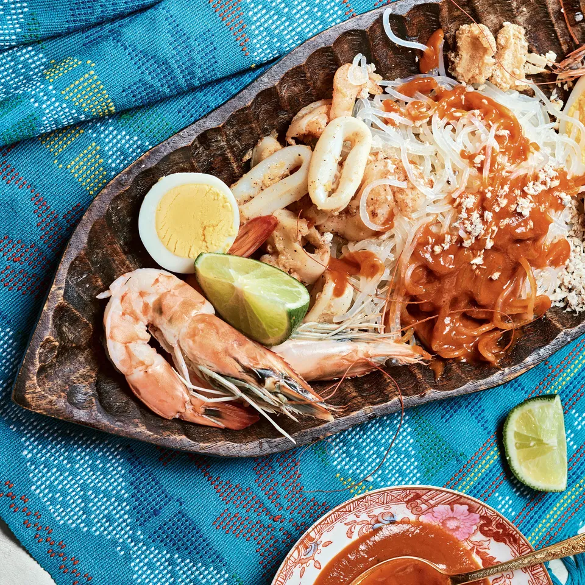

Pancit Palabok (Rice Noodles with Shrimp Sauce)

Note: This description and recipe is from I Am a Filipino by: Nicole Ponseca and Miguel Trinidad
This is a delicious, buttery, bisque-like shrimp sauce tossed with white rice noodles and topped with crispy pork rinds. Using the shrimp shells in the stock is crucial because it adds so much richness to the sauce.
Ingredients
1/2 cup unsalted butter
3/4 cup all-purpose flour
2 to 3 cups warm shrimp stock
Fish Sauce
2 tablespoons vegetable oil
1 tablespoon minced garlic
1 pound raw jumbo shrimp, shells removed and reserved, shrimp halved lengthwise and deveined
1 pound squid bodies, cut into thick rings
1 pound palabok noodles, cooked, drained, and kept warm
1/4 cup crushed pork rinds
1 cup diced smoked tofu
1/4 cup tinapa or bonito flakes
1 lemon, cut into quarters
Cooking Steps
- In a small saucepan, melt the butter over medium heat, then whisk in the flour and cook, whisking continuously, until the flour and butter are totally combined and have turned a light blond color.
- Immediately whisk in 2 cups of the warm stock and bring the mixture to a boil, then stir and simmer over low heat until the sauce thickens, about 10 minutes. If it gets too thick, add a little more stock. Season with fish sauce, then set the sauce aside and keep hot.
- In a large skillet, heat the vegetable oil over medium heat. Add the garlic and cook, stirring continuously, for 1 minute. Add the shrimp and squid and cook, stirring often, until the shrimp begin to curl and turn pink, about 5 minutes. Turn off the heat.
- Put the warm cooked noodles on a serving platter and spoon the warm sauce over the center of the platter. Top the noodles with the cooked shrimp and squid, alternating shrimp and squid around the platter. Sprinkle on the crushed pork rinds, smoked tofu, and tinapa.
- Serve immediately with lemon wedges